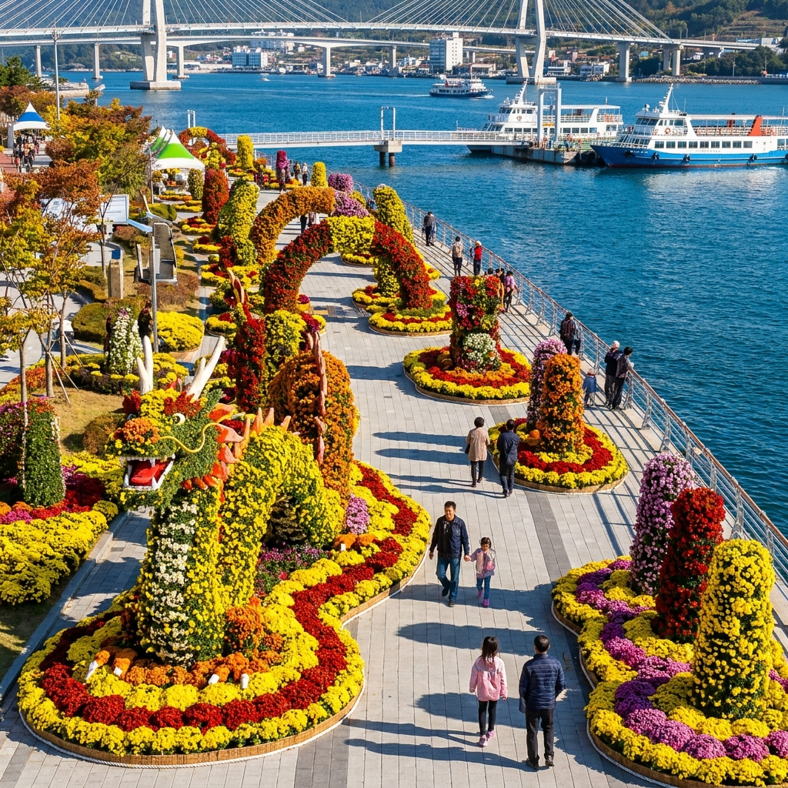
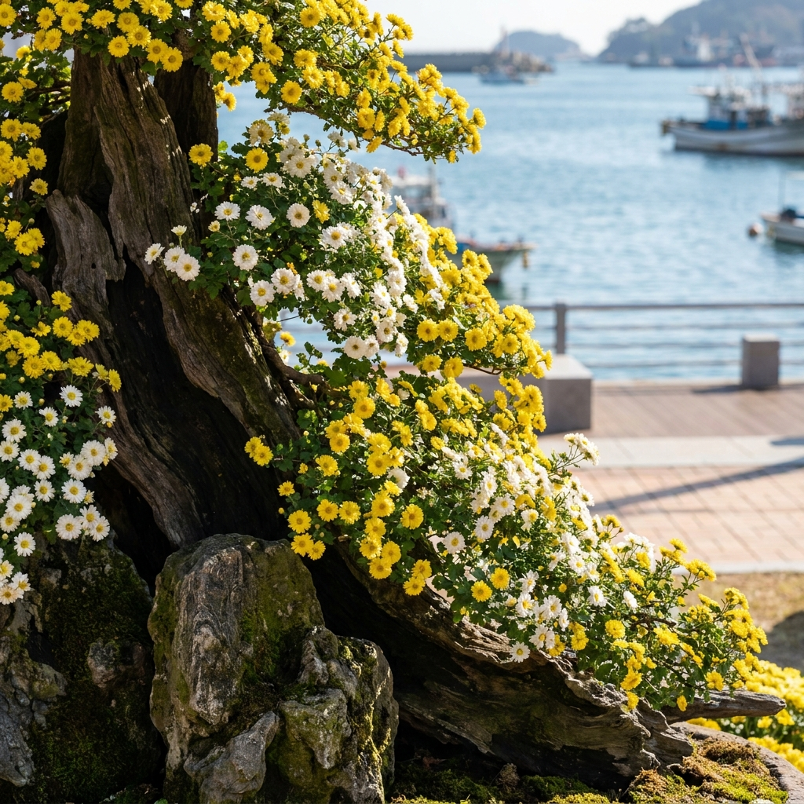
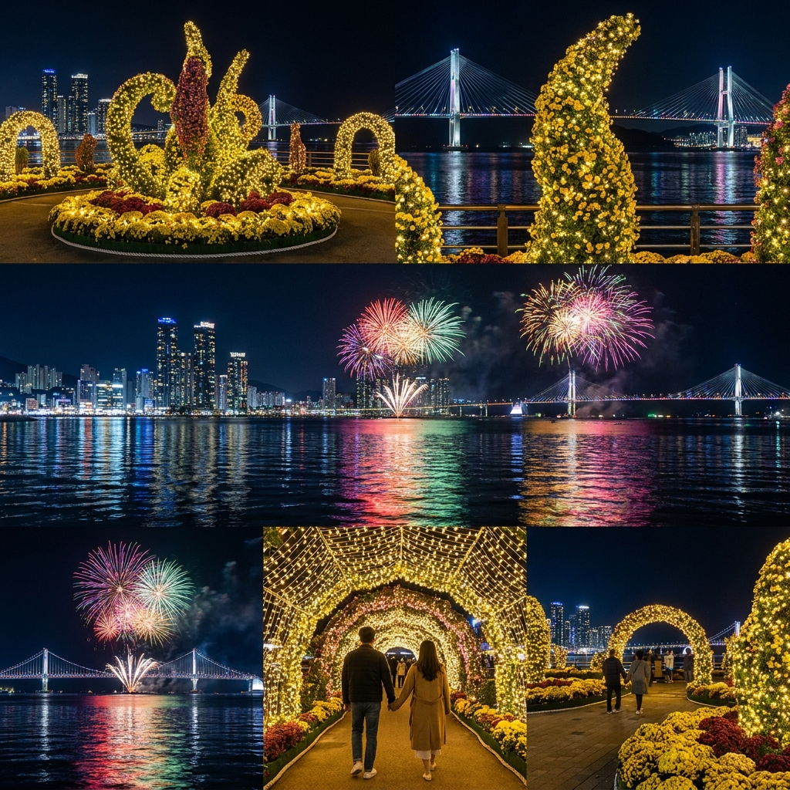

창원 마산가고파국화축제 2026 일정과 관람 코스 — 3·15해양누리공원 주차장 팁과 돝섬 연계 유람선 요금 비교
2026년 제26회 마산가고파국화축제는 10월 24일(토)부터 11월 2일(월)까지 열흘간 창원시 마산합포구 3·15해양누리공원과 합포수변공원 일원에서 개최됩니다.
푸른 마산 앞바다를 배경으로 10만여 점의 오색 국화 조형물이 수놓아지며 입장료는 전 구역 완전 무료로 개방됩니다.
축제 주무대인 3·15해양누리공원에서 바다 산책로를 걸은 뒤 인근 마산연안여객선터미널에서 유람선을 타고 황금돼지섬 돝섬으로 건너가는 코스가 가장 인기 있는 가을 당일치기 동선입니다.
주말 방문객이 집중되는 낮 시간대에는 메인 주차장이 매우 혼잡하므로, 마산항 제2부두 임시주차장을 이용하시고 무료 셔틀버스를 연계하시는 것이 주차 대란을 피하는 가장 현명한 방법입니다.

3·15해양누리공원 수변 산책로를 따라 조성된 오색 국화 정원과 마산만의 푸른 바다 풍경 / AI 제작 이미지
01 | 2026 마산가고파국화축제 개최 일정과 바다 국화길 핵심 개요
가을의 절정을 알리는 대한민국 대표 꽃 축제이자 전국 최대 규모의 국화 생산 역사를 자랑하는 제26회 마산가고파국화축제가 2026년 10월 24일 막을 올립니다.
창원시 마산합포구는 1961년 국내 최초로 국화 상업 재배를 시작한 역사적인 고장으로, 전국 국화 재배 면적의 중심지 역할을 이어오고 있습니다.
축제가 펼쳐지는 무대는 탁 트인 바다 전망을 자랑하는 3·15해양누리공원(중앙광장~보도교 구간)과 맞은편 합포수변공원까지 이어져 해안선을 따라 거대한 꽃길 산책로가 완성됩니다.
단순히 꽃을 구경하는 것을 넘어 가고파 바닷바람과 국화 향기가 어우러지는 수변 힐링 코스로 꾸며져 있어 연인, 가족, 사진 동호인들에게 매년 뜨거운 사랑을 받고 있습니다.
올해는 야간 경관 조명과 첨단 미디어 아트를 대폭 확대하여 주간의 싱그러운 꽃 풍경뿐만 아니라 해 질 녘 노을과 밤바다 야경까지 하루 종일 즐길 수 있는 체류형 축제로 진행됩니다.
02 | 3·15해양누리공원 축제장 구역별 테마와 추천 관람 동선
3·15해양누리공원은 해안을 따라 길게 뻗은 수변 공원으로 규모가 방대하기 때문에 테마별 구역을 미리 파악하고 이동하는 것이 좋습니다.
행사장은 크게 환영존(입구 아치 및 마스코트), 테마존(창원의 미래 및 백제·가야 역사 조형물), 국화분재존, 체험 및 플리마켓존, 해양레저 조망존으로 구분됩니다.
추천하는 도보 관람 동선은 중앙광장 안내소 → 국화 대형 랜드마크 타워 → 명품 분재 전시관 → 해양보도교(물빛다리) 수변 산책로 → 로컬푸드 마켓 순서입니다.
특히 중앙광장 한가운데 세워지는 거대한 국화 융합 조형물은 한 줄기에서 수천 송이의 국화를 피워내는 '다륜대작' 기술의 극치를 보여주며 관람객들의 탄성을 자아냅니다.
바다 위로 뻗은 해양보도교를 건너면 반대편 수변 산책로와 연결되며, 바다 위에서 국화 축제장 전체를 조망할 수 있어 최적의 뷰포인트로 꼽힙니다.
03 | 입장료 무료 혜택과 국화 분재 명품관 관람 포인트
마산가고파국화축제의 가장 큰 장점 중 하나는 축제장 전 구역 무료입장이라는 점입니다.
별도의 매표소나 입장권 발권 없이 자유롭게 공원으로 진입하여 수억 송이의 국화 물결을 감상하실 수 있습니다.
공원 내 조성된 실내·외 '국화분재 명품관' 역시 무료로 개방되며, 전국의 국화 재배 장인들이 1년 동안 정성으로 가꾼 목부작, 석부작, 현애작 등 400여 점의 명품 분재가 전시됩니다.
바위나 고목에 뿌리를 내리고 기품 있게 뻗어나간 분재 작품들은 하나의 축소된 자연 풍경을 연출하여 어르신들과 예술 애호가들에게 깊은 감동을 줍니다.
작품마다 친절한 해설 팻말이 부착되어 있어 분재의 수종과 제작 기법을 배우며 감상하는 색다른 재미가 있습니다.

고목과 자연석에 뿌리를 내린 기품 있는 명품 국화 분재 작품과 은은한 가을 햇살 / AI 제작 이미지
04 | 돝섬 해상유원지 연계 여행 코스와 유람선 탑승 요금 비교표
마산가고파국화축제를 찾으셨다면 바로 인근에 위치한 돝섬 해상유원지를 함께 둘러보시는 것을 강력히 추천합니다.
돝섬은 돼지가 누워있는 모양을 닮았다고 하여 이름 붙여진 유원지로, 국내 최초의 해상유원지이자 울창한 해송 숲과 둘레길이 잘 닦여 있는 힐링 명소입니다.
축제장에서 차량으로 5분 거리인 마산연안여객선터미널(돝섬유람선터미널)에서 배를 타면 약 10분 만에 섬에 닿을 수 있습니다.
축제장 방문과 돝섬 연계 관람 코스의 소요시간과 유람선 요금은 아래 비교표를 참고하시기 바랍니다.
| 구분 |
3·15해양누리공원 (축제장) |
돝섬 해상유원지 (연계 코스) |
| 주요 특징 |
10만여 점 바다 국화 조형물, 분재관, 문화공연 |
바다 위 섬 산책, 황금돼지 포토존, 해안 둘레길 1.5km |
| 권장 소요시간 |
약 1시간 30분 ~ 2시간 |
약 2시간 ~ 2시간 30분 (왕복 배편 포함) |
| 입장료 및 요금 |
전면 무료 |
섬 입장료 포함 왕복 유람선비 (대인 10,000원 / 소인 6,000원) |
| 운항 간격 |
상시 도보 입장 |
오전 9시부터 30분 간격 운항 (주말 탄력 증편) |
| 추천 방문 시간 |
오후 3시 이후 (일몰 및 야경 감상) |
오전 10시 ~ 오후 1시 (선선한 오전 바다 산책) |
돝섬 내부는 완만한 해안 둘레길로 조성되어 있어 휠체어나 유모차를 동반한 가족 단위 나들이객도 편안하게 산책을 즐기실 수 있습니다.
05 | 야간 드론 라이트쇼 및 불꽃쇼 일정과 해안 야경 명당
마산가고파국화축제의 밤은 낮과는 완전히 다른 화려한 빛의 향연으로 물듭니다.
개막 첫날인 10월 24일(토) 저녁 개막식 공식 행사와 함께 수백 대의 드론이 밤하늘을 수놓는 드론 라이트쇼와 해상 불꽃쇼가 마산만 앞바다 위에서 펼쳐집니다.
매일 오후 18시부터 21시까지는 공원 전역에 설치된 LED 조명과 미디어 터널이 불을 밝히며 낭만적인 밤바다 산책로를 완성합니다.
야경을 가장 아름답게 조망할 수 있는 명당은 3·15해양누리공원 해양보도교 주탑 전망대와 중앙광장 수변 계단식 쉼터입니다.
바닷물에 반사되는 화려한 불빛과 국화꽃 실루엣이 어우러져 어디서 찍어도 환상적인 야경 인생샷을 남기실 수 있습니다.

밤바다를 수놓는 해상 불꽃쇼와 화려한 LED 조명으로 빛나는 3·15해양누리공원의 낭만적인 야경 / AI 제작 이미지
06 | 축제장 공식 주차장 위치와 주말 만차 시 임시주차장 셔틀버스 팁
가을 국화축제 기간 동안 주말마다 수십만 명의 인파가 몰리기 때문에 주차 전략을 사전에 철저히 세우셔야 합니다.
3·15해양누리공원 내 자체 주차장은 수용 규모가 한정되어 있어 주말 오전 10시 30분을 전후하여 거의 만차가 발생합니다.
주차 대기 행렬로 도로에서 1시간 이상 낭비하지 않으려면 외곽의 대형 임시주차장을 즉시 이용하시는 것이 현명합니다.
창원시에서는 관람객 편의를 위해 마산항 제2부두 주차장, 정부경남지방합동청사, 마산자유무역지역 관리원 일원에 수천 대 규모의 임시주차장을 마련하고 있습니다.
임시주차장 이용료는 전액 무료이며, 주요 주차장 입구마다 주차 유도 요원이 배치되어 신속한 안내를 제공합니다.
07 | 축제장 셔틀버스 운행 노선과 대중교통(마산역·시외버스터미널) 접근법
외곽 임시주차장과 마산 시내 주요 교통 거점에서는 축제장까지 직행하는 무료 순환 셔틀버스가 운행됩니다.
셔틀버스는 축제 기간 주말 및 공휴일 동안 오전 9시 30분부터 오후 20시 30분까지 약 15~20분 간격으로 순환 운행합니다.
기차(KTX)를 타고 오시는 경우 마산역 광장 앞 버스정류장에서 축제장행 시내버스(105번, 106번 등)를 타시거나 주말 셔틀버스를 이용하시면 약 20분 만에 도착하실 수 있습니다.
시외버스를 이용하시는 분들은 마산시외버스터미널 또는 마산고속버스터미널에서 환승하여 합포수변공원 방면 버스를 탑승하시면 편리합니다.
타 지자체에서 자가용으로 오시는 경우에도 복잡한 해안도로 진입 전에 임시주차장에 차를 대고 셔틀버스를 타는 것이 체력과 시간을 아끼는 가장 빠른 길입니다.
08 | 마산 어시장 복국거리와 아구찜거리 식도락 연계 체크리스트
금강산도 식후경이듯, 마산에 오셨다면 지역을 대표하는 유서 깊은 전통 먹거리를 놓칠 수 없습니다.
축제장에서 도보 10~15분, 차량 3분 거리에 영남 3대 어시장으로 불리는 마산어시장이 자리 잡고 있습니다.
활기 넘치는 어시장 구경과 함께 인근에 형성된 특화 음식거리를 방문해 보시는 것을 추천합니다.
🐟 마산 국화축제 연계 필수 미식 명소 체크리스트
1. 마산 복국거리: 미나리와 콩나물을 듬뿍 넣고 맑고 시원하게 끓여낸 복지리는 전국적인 명성을 자랑하며, 쌀쌀한 가을 바닷바람을 맞은 뒤 몸을 녹이기에 최고입니다.
2. 오동동 아구찜거리: 바람에 꾸덕꾸덕 말린 건진 아귀에 된장과 매콤한 양념, 통통한 콩나물을 버무려 낸 원조 마산 아구찜의 깊은 감칠맛을 경험할 수 있습니다.
3. 마산어시장 활어회센터: 가을 제철을 맞은 전어, 전갱이, 도다리 등 싱싱한 제철 횟감을 가성비 넘치는 가격에 푸짐하게 맛보실 수 있습니다.
4. 창동예술촌 레트로 베이커리: 식사 후 디저트 코스로 1950년대부터 자리를 지켜온 고려당, 학문당 등 유서 깊은 제과점에서 추억의 빵을 맛보며 골목 산책을 즐겨보세요.
식사 시간대에는 대기 줄이 길어질 수 있으므로 점심은 11시 30분 이전, 저녁은 17시 전후로 방문하시면 한결 여유롭게 식사하실 수 있습니다.
09 | 마산가고파국화축제 방문 전 필수 준비물과 혼잡 회피 시간대
더욱 쾌적하고 즐거운 마산 국화 나들이를 위해 출발 전 꼭 알아두셔야 할 실전 팁을 정리해 드립니다.
3·15해양누리공원은 바다와 바로 맞닿아 있어 낮에는 따뜻한 가을 햇살이 비치지만, 해가 지면 바닷바람으로 인해 체감 온도가 급격히 떨어집니다.
따라서 가볍게 입고 벗을 수 있는 경량 패딩이나 바람막이 점퍼, 스카프를 반드시 챙기셔야 야간 조명쇼까지 따뜻하게 즐기실 수 있습니다.
공원 산책로와 해양보도교의 전체 길이가 수 킬로미터에 달하므로 발이 편안한 운동화 착용은 필수입니다.
가장 추천하는 방문 시간대는 오후 15시 30분경입니다. 낮의 화사한 꽃밭을 여유 있게 둘러본 뒤, 17시경 바다 노을을 감상하고, 18시 점등식과 함께 야경까지 한 번의 방문으로 모두 만끽할 수 있기 때문입니다.
#마산가고파국화축제
#마산국화축제2026
#315해양누리공원
#창원가을여행
#돝섬해상유원지
#마산가볼만한곳
#국화축제주차장
#마산어시장맛집
#가을꽃축제
#마산야경명소